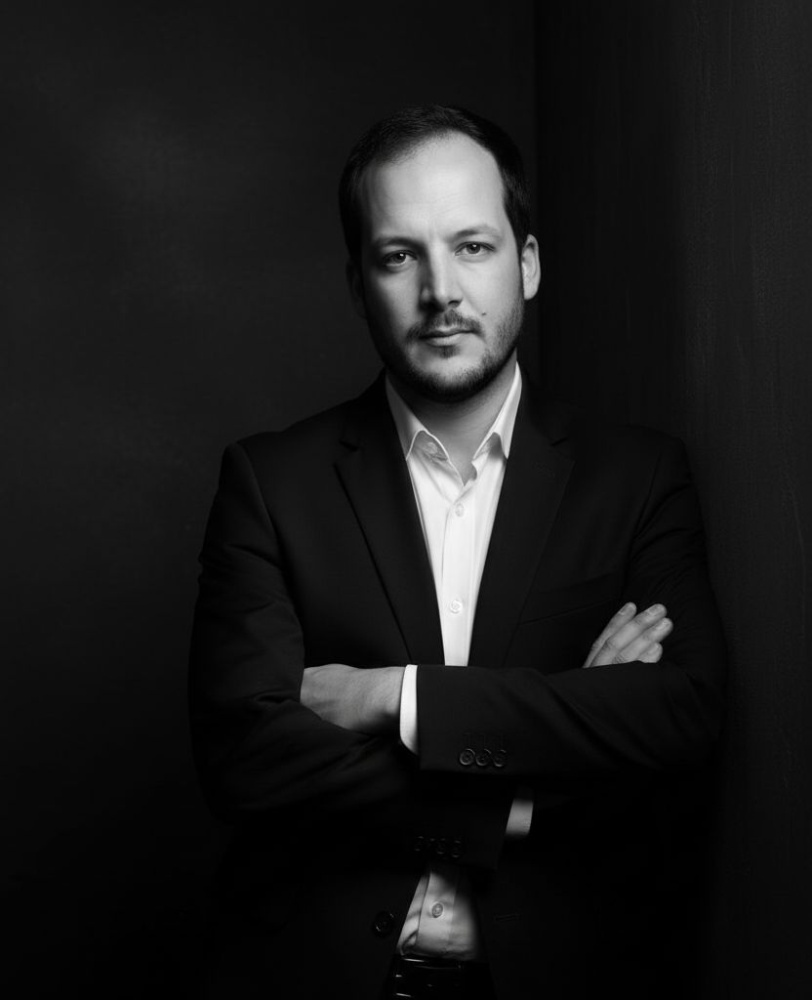

L'atelier
Une équipe de praticiens formés à l'exigence de l'agronomie et du paysage — ancrés dans les réalités climatiques, botaniques et culturelles du Maroc.

Adil Boumahdi
ABFondateur · Ingénieur agronome & Architecte paysagiste · CAP agréé · Secrétaire général AMAP
Ingénieur d'État en agronomie spécialisé en architecture du paysage (IAV Hassan II, 2015) et titulaire d'un M.Sc. Cum Laude en oléiculture et technologie des huiles (CIHEAM / Université de Córdoba, 2019), Adil Boumahdi est également Conseiller Agricole Privé (CAP) agréé par le Ministère de l'Agriculture marocain depuis 2021.
Il fonde l'Atelier Boumahdi Adil avec une conviction simple : le paysage marocain — ses sols calcaires, ses espèces endémiques, ses savoirs d'eau et de pierre — exige une rigueur agronomique autant qu'une intelligence des lieux. En plus de dix ans de pratique, il a dirigé des projets de référence : la réhabilitation du Parc historique de Bab Lamer à Fès (5,4 ha, site mérinide, 26 MM MAD), l'aménagement écologique du Parc Industriel TETOUANPARK (corridor écologique, flore endémique, réutilisation des eaux usées), des lacs artificiels à Rabat, des résidences et hôtels du nord au sud du Maroc, des plans urbains (Plan vert de Khénifra, Chartes paysagères de Sidi Slimane et Sidi Kacem). En 2016, en amont de la COP-22, il a conçu avec l'INRA, la FM6E et l'ONCF les projets de végétalisation par génie végétal des couloirs ferroviaires marocains.
Chercheur et praticien, il co-signe en 2022 un article dans Land Use Policy (Q1, IF 6.2) sur la dynamique des paysages oléicoles de Cordoue. Il enseigne aujourd'hui à l'IAV Hassan II (Master en aménagement paysager durable) et à l'École d'Architecture et du Paysage de Casablanca (M1 & M2) — GIS, restauration écologique, biodiversité. Il est Secrétaire général de l'Association Marocaine des Architectes Paysagistes (AMAP).
L'équipe
Salma Othmani
SOArchitecte paysagiste · Végétation & Biodiversité
Salma Othmani pilote les études de végétation et les plans de plantation. Spécialiste des espèces endémiques du Maroc et des écosystèmes méditerranéens arides, elle conçoit des palettes végétales adaptées au climat local, à faible consommation d'eau et à haute valeur écologique. Elle coordonne également les programmes d'entretien et les suivis post-plantation sur les chantiers ABA.
Yassine El Fassi
YFIngénieur · Systèmes d'eau & Infrastructures
Yassine El Fassi supervise l'ingénierie hydraulique des projets ABA : systèmes d'irrigation, bassins, fontaines, gestion des eaux pluviales et grises. Il optimise chaque installation pour la durabilité et l'économie de la ressource hydrique. Son expertise couvre aussi les réseaux d'éclairage extérieur et les infrastructures enterrées des espaces paysagers.
Nadia Berrada
NBDesigner & Coordination de projet
Nadia Berrada assure le lien entre la conception et la réalisation. Elle coordonne les équipes de maâlems et d'artisans sur les chantiers qui intègrent des matériaux traditionnels — tadelakt, zellige, pierre sèche — et veille à la cohérence esthétique de chaque projet, de l'esquisse à la livraison. Elle prend en charge la relation client tout au long du suivi de chantier.
Vous souhaitez travailler avec l'atelier ? Nous intervenons à Rabat, Casablanca, Marrakech, Fès et dans tout le Maroc.
Initier un projet